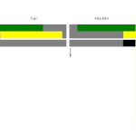

TITLE Yujiri's homepage
NAV Yujiri's homepage
TEMPLATE DEFAULT
ONLOAD resizeIndex()
ONRESIZE resizeIndex()
DESC I'm a programmer, writer, and philosopher of all things. I post about everything from game design and storytelling and conlangs to philosophy.
I'm a programmer, writer, and philosopher of all things. I post all kinds of stuff here.
Prismata

I used to play this game devoutly, and wrote a lot of beginner guides and stuff for it.
Spem

The philosopher's conlang. Join me, and together we will rule our own minds.
Software

As my primary skill set, I naturally love to talk about software.
Protagonism

Does it count as a religion if it's all a priori? 🤔
Argument

Wherein I talk about conversational tricks and the role of psychology in arguments, and debunk random bad ideas.
Music

I'm a musician... sort of...
Game Design

Many people think that different people enjoy different things and so all judgements of games are nothing more than personal preferences, but I don't subscribe to that nihilism.
Storytelling

What makes a good story? I'm not quite sure myself, but I have plenty of ideas.
Reviews

I enjoy enumerating all the flaws in other people's stories and games, and occasionally gushing over good ones.
My Works

Novels, DDLC mods, poems
Counterplay Infinity

A minimalist, proof-of-concept fighting game I made a couple years ago that doesn't live up to its name.
Miscellany

Personal ramblings, stories, and secure contact info.
This site wouldn't be what it is without my dedicated contributor main_gi. He's been my de-facto editor for a long time, has helped me with CSS troubles, found two vulnerabilities in my comment feature, and even contributed valuable insight that got me to change some beliefs. His page is here.
The above photos, where they're not mine, are from: unknown pxhere user, Aaron Burden, sthenostudio, and César A. Mazillo Jr.
I also have a presence on Twitter, dev.to, Youtube (on Youtube I currently only post DDLC-related content), and minds.com (passively trying out, might start posting more in the future).
Recent update log:
June 23:
Several changes:
- Login panel is now in the comment section, so the navbar is less cramped on mobile.
- Timestamp is just outside of the comment section, so it renders without Javascript.
- Most importantly, the navbar is no longer a web component and the nav HTML is computed on the server, so you can still have navigation without Javascript.
- The make/recover account button no longer appears while logged in.
June 20:
I cleared old history, fixed the comment box bug and made it so the email entry box doesn't appear if you're logged in. I thought it was confusing as to how it works (since it's your autosub setting that determines whether you subscribe to it) and raised questions about scenarios like being logged in and commenting with the email field empty or filled with something else.
June 16:
It's been a while. Updated Wikipedia's neutrality policy is a sham to not object to the policy itself so much, and moved An attempt to pin down the meaning of political 'left' and 'right' and The common error behind leftist economics to Argument.
June 8:
I improved the layout of the Spem dictionary interface so it uses the horizontal space more on wide screens. Good God, I hate CSS. I spent a few hours and there's still a lot to be desired. The things I want are so simple, but CSS... the damn thing is a pile of inscrutable special cases instead of an elegant, organized way of describing layout like you'd expect from a language dedicated to that only.
June 7:
Added a link on the Argument index to the article that converted me to base 6.
June 6:
Changed the tags of a lot of Spem words, and added several new ones, including rɪl, hoi, teu, dim, and ði; and removed pel.
June 3:
I wrote What's a Protagonist? and got back to Spem a little bit, revising possession verbs (again) so that there's a better way to express giving.